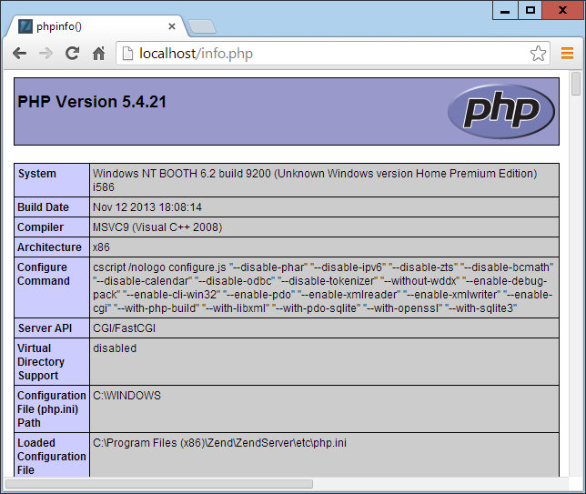
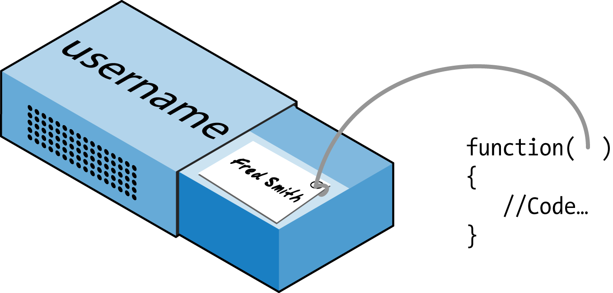

PHP Functions and Objects
The basic requirements of any programming language include somewhere to store data, a means of directing program flow, and a few bits and pieces such as expression evaluation, file management, and text output. PHP has all these, plus tools like else and elseif to make life easier. But even with all these in our toolkit, programming can be clumsy and tedious, especially if you have to rewrite portions of very similar code each time you need them.
That’s where functions and objects come in. As you might guess, a function is a set of statements that performs a particular function and—optionally—returns a value. You can pull out a section of code that you have used more than once, place it into a function, and call the function by name when you want the code.
Functions have many advantages over contiguous, inline code. For example, they:
• Involve less typing
• Reduce syntax and other programming errors
• Decrease the loading time of program files
• Decrease execution time, because each function is compiled only once, no matter how often you call it
• Accept arguments and can therefore be used for general as well as specific cases
Objects take this concept a step further. An object incorporates one or more functions, and the data they use, into a single structure called a class.
In this chapter, you’ll learn all about using functions, from defining and calling them to passing arguments back and forth. With that knowledge under your belt, you’ll start creating functions and using them in your own objects (where they will be referred to as methods ).
PHP Functions
PHP comes with hundreds of ready-made, built-in functions, making it a very rich language. To use a function, call it by name. For example, you can see the print function in action here:
print("print is a pseudo-function");
The parentheses tell PHP that you’re referring to a function. Otherwise, it thinks you’re referring to a constant. You may see a warning such as this:
Notice: Use of undefined constant fname - assumed 'fname'
followed by the text string fname, under the assumption that you must have wanted to put a literal string in your code. (Things are even more confusing if there is actually a constant named fname, in which case PHP uses its value.)
Strictly speaking, print is a pseudofunction, commonly called a construct. The difference is that you can omit the parentheses:
print "print doesn't require parentheses";
You do have to put parentheses after any other functions you call, even if they’re empty (that is, if you’re not passing any argument to the function).
Functions can take any number of arguments, including zero. For example, phpinfo, as shown next, displays lots of information about the current installation of PHP and requires no argument. The result of calling this function can be seen in Figure 5-1.
phpinfo();
The phpinfo function is extremely useful for obtaining information about your current PHP installation, but that information could also be very useful to potential hackers. Therefore, never leave a call to this function in any web-ready code.

Figure 5-1. The output of PHP’s built-in phpinfo function
Some of the built-in functions that use one or more arguments appear in Example 5-1.
Example 5-1. Three string functions
<?php
echo strrev(".dlrow olleH"); // Reverse string
echo str_repeat("Hip ", 2); // Repeat string
echo strtoupper("hooray!"); // String to uppercase
?>
This example uses three string functions to output the following text:
Hello world. Hip Hip HOORAY!
As you can see, the strrev function reversed the order of characters in the string, str_repeat repeated the string "Hip " twice (as required by a second argument), and strtoupper converted "hooray!" to uppercase.
Defining a Function
The general syntax for a function is as follows:
function function_name([parameter[,...]])
{
//Statements
}
I’ll explain all the square brackets, in case you find them confusing. The first line of the syntax indicates the following:
• A definition starts with the word function.
• A name follows, which must start with a letter or underscore, followed by any number of letters, numbers, or underscores.
• The parentheses are required.
• One or more parameters, separated by commas, are optional.
Function names are case-insensitive, so all of the following strings can refer to the print function: PRINT, Print, and PrInT.
The opening curly brace starts the statements that will execute when you call the function; a matching curly brace must close it. These statements may include one or more return statements, which force the function to cease execution and return to the calling code. If a value is attached to the return statement, the calling code can retrieve it, as we’ll see next.
Returning a Value
Let’s take a look at a simple function to convert a person’s full name to lowercase and then capitalize the first letter of each name.
We’ve already seen an example of PHP’s built-in strtoupper function in Example 5-1. For our current function, we’ll use its counterpart, strtolower :
$lowered = strtolower("aNY # of Letters and Punctuation you WANT");
echo $lowered;
The output of this experiment is as follows:
any # of letters and punctuation you want
We don’t want names all lowercase, though; we want the first letter of each name capitalized. (We’re not going to deal with subtle cases such as Mary-Ann or Jo-En-Lai for this example.) Luckily, PHP also provides a ucfirst function that sets the first character of a string to uppercase:
$ucfixed = ucfirst("any # of letters and punctuation you want");
echo $ucfixed;
The output is as follows:
Any # of letters and punctuation you want
Now we can do our first bit of program design: to get a word with its initial letter capitalized, we call strtolower on a string first, and then ucfirst. The way to do this is to nest a call to strtolower within ucfirst. Let’s see why, because it’s important to understand the order in which code is evaluated.
Say you make a simple call to the print function:
print(5-8);
The expression 5-8 is evaluated first, and the output is – 3. (As you saw in the previous chapter, PHP converts the result to a string in order to display it.) If the expression contains a function, that function is evaluated first as well:
print(abs(5-8));
PHP is doing several things in executing that short statement: 1. Evaluate 5-8 to produce – 3.
2. Use the abs function to turn – 3 into 3.
3. Convert the result to a string and output it using the print function.
It all works, because PHP evaluates each element from the inside out. The same procedure is in operation when we call the following:
ucfirst(strtolower("aNY # of Letters and Punctuation you WANT"));
PHP passes our string to strtolower and then to ucfirst, producing (as we’ve already seen when we played with the functions separately):
Any # of letters and punctuation you want
Now let’s define a function (shown in Example 5-2 ) that takes three names and makes each one lowercased with an initial capital letter.
Example 5-2. Cleaning up a full name
<?php
echo fix_names("WILLIAM", "henry", "gatES");
function fix_names($n1, $n2, $n3)
{
$n1 = ucfirst(strtolower($n1));
$n2 = ucfirst(strtolower($n2));
$n3 = ucfirst(strtolower($n3));
return $n1. " ". $n2. " ". $n3;
}
?>
You may well find yourself writing this type of code, because users often leave their Caps Lock key on, accidentally insert capital letters in the wrong places, and even forget capitals altogether. The output from this example is shown here:
William Henry Gates
Returning an Array
We just saw a function returning a single value. There are also ways of getting multiple values from a function.
The first method is to return them within an array. As you saw in Chapter 3, an array is like a bunch of variables stuck together in a row. Example 5-3 shows how you can use an array to return function values.
Example 5-3. Returning multiple values in an array
<?php
$names = fix_names("WILLIAM", "henry", "gatES");
echo $names[0]. " ". $names[1]. " ". $names[2];
function fix_names($n1, $n2, $n3)
{
$n1 = ucfirst(strtolower($n1));
$n2 = ucfirst(strtolower($n2));
$n3 = ucfirst(strtolower($n3));
return array($n1, $n2, $n3);
}
?>
This method has the benefit of keeping all three names separate, rather than concatenating them into a single string, so you can refer to any user simply by first or last name, without having to extract either name from the returned string.
Do Not Pass Arguments by Reference
In PHP versions prior to 5.3.0, you used to be able to preface a variable with the & symbol to tell the parser to pass a reference to the variable, not the variable’s value. This granted a function access to the variable (allowing different values to be written back to it) and could be a security risk, and also a cause of tricky-to-track bugs. It is also the antithesis of object oriented programming (OOP).
Passing by reference was deprecated in PHP 5.3.0 and was removed in PHP 5.4.0. You should therefore not use this feature other than on legacy websites, and even there you are recommended to rewrite code that passes by reference, because it will halt with a fatal error on newer versions of PHP.
In case you are called upon to maintain legacy code you need to know how this used to work so that you can build replacement routines where necessary. This concept can be hard to get your head around, though, so let’s go back to the matchbox metaphor from Chapter 3.
Imagine that, instead of taking a piece of paper out of a matchbox, reading it, copying it to another piece of paper, putting the original back, and passing the copy to a function (phew!), you simply attach a piece of thread to the original piece of paper and pass one end of it to the function (see Figure 5-2 ).

Figure 5-2. Imagining a reference as a thread attached to a variable
Now the function can follow the thread to find the data to be accessed. This avoids all the overhead of creating a copy of the variable just for the function’s use. What’s more, the function can now modify the variable’s value.
This means you can rewrite Example 5-3 to pass references to all the parameters, and then the function can modify these directly (see Example 5-4 ).
Example 5-4. Returning values from a function by reference
<?php
$a1 = "WILLIAM";
$a2 = "henry";
$a3 = "gatES";
echo $a1. " ". $a2. " ". $a3. "<br>";
fix_names($a1, $a2, $a3);
echo $a1. " ". $a2. " ". $a3;
function fix_names(&$n1, &$n2, &$n3)
{
$n1 = ucfirst(strtolower($n1));
$n2 = ucfirst(strtolower($n2));
$n3 = ucfirst(strtolower($n3));
}
?>
Rather than passing strings directly to the function, you first assign them to variables and print them out to see their “before” values. Then you call the function as before, but put a & symbol in front of each parameter, which tells PHP to pass the variables’ references only.
Now the variables $n1, $n2, and $n3 are attached to “threads” that lead to the values of $a1, $a2, and $a3. In other words, there is one group of values, but two sets of variable names are allowed to access them.
Therefore, the function fix_names only has to assign new values to $n1, $n2, and $n3 to update the values of $a1, $a2, and $a3. The output from this code is:
WILLIAM henry gatES
William Henry Gates
As you see, both of the echo statements use only the values of $a1, $a2, and $a3. I must reemphasize that this is no longer supported programming practice in PHP, and you should therefore convert any code that relies on passing by reference. Sometimes it’s as simple as removing the & symbols, because often they were not required in the first place. Or, as in the following example, you can use global variables instead.
Returning Global Variables
The better way to give a function access to an externally created variable, is by declaring it a global variable from within the function. The global keyword followed by the variable name gives every part of your code full access to it (see Example 5-5 ).
Example 5-5. Returning values in global variables
<?php
$a1 = "WILLIAM";
$a2 = "henry";
$a3 = "gatES";
echo $a1. " ". $a2. " ". $a3. "<br>";
fix_names();
echo $a1. " ". $a2. " ". $a3;
function fix_names()
{
global $a1; $a1 = ucfirst(strtolower($a1));
global $a2; $a2 = ucfirst(strtolower($a2));
global $a3; $a3 = ucfirst(strtolower($a3));
}
?>
Now you don’t have to pass parameters to the function, and it doesn’t have to accept them. Once declared, these variables remain global and available to the rest of your program, including its functions. In order to retain as much local scope as possible, you should try returning arrays or using variables by association. Otherwise, you will begin to lose some of the benefits of functions.
Recap of Variable Scope
A quick reminder of what you know from Chapter 3 :
• Local variables are accessible just from the part of code where you define them. If they’re outside of a function, they can be accessed by all code outside of functions, classes, and so on. If a variable is inside a function, only that function can access the variable, and its value is lost when the function returns.
• Global variables are accessible from all parts of your code.
• Static variables are accessible only within the function that declared them but retain their value over multiple calls.
Including and Requiring Files
As you progress in your use of PHP programming, you are likely to start building a library of functions that you think you will need again. You’ll also probably start using libraries created by other programmers.
There’s no need to copy and paste these functions into your code. You can save them in separate files and use commands to pull them in. There are two types of command to perform this action: include and require.
The include Statement
Using include, you can tell PHP to fetch a particular file and load all its contents. It’s as if you pasted the included file into the current file at the insertion point. Example 5-6 shows how you would include a file called library.php.
Example 5-6. Including a PHP file
<?php
include "library.php";
// Your code goes here
?>
Using include_once
Each time you issue the include directive, it includes the requested file again, even if you’ve already inserted it. For instance, suppose that library.php contains a lot of useful functions, so you include it in your file, but also include another library that includes library.php. Through nesting, you’ve inadvertently included library.php twice. This will produce error messages, because you’re trying to define the same constant or function multiple times. So you should use include_once instead (see Example 5-7 ).
Example 5-7. Including a PHP file only once
<?php
include_once "library.php";
// Your code goes here
?>
Then, whenever another include or include_once is encountered, if it has already been executed, it will be completely ignored. To determine whether the file has already been executed, the absolute file path is matched after all relative paths are resolved and the file is found in your include path.
In general, it’s probably best to stick with include_once and ignore the basic include statement. That way, you will never have the problem of files being included multiple times.
Using require and require_once
A potential problem with include and include_once is that PHP will only attempt to include the requested file. Program execution continues even if the file is not found.
When it is absolutely essential to include a file, require it. For the same reasons I gave for using include_once, I recommend that you generally stick with require_once whenever you need to require a file (see Example 5-8 ).
Example 5-8. Requiring a PHP file only once
<?php
require_once "library.php";
// Your code goes here
?>
PHP Version Compatibility
PHP is in an ongoing process of development, and there are multiple versions. If you need to check whether a particular function is available to your code, you can use the function_exists function, which checks all predefined and user-created functions.
Example 5-9 checks for array_combine, a function specific to PHP version 5.
Example 5-9. Checking for a function’s existence
<?php
if (function_exists("array_combine"))
{
echo "Function exists";
}
else
{
echo "Function does not exist - better write our own";
}
?>
Using code such as this, you can take advantage of features in newer versions of PHP and yet still have your code run on earlier versions, as long as you replicate any features that are missing. Your functions may be slower than the built-in ones, but at least your code will be much more portable.
You can also use the phpversion function to determine which version of PHP your code is running on. The returned result will be similar to the following, depending on the version: 5.5.11
PHP Objects
In much the same way that functions represent a huge increase in programming power over the early days of computing, where sometimes the best program navigation available was a very basic GOTO or GOSUB statement, object-oriented programming (OOP) takes the use of functions to a whole new level.
Once you get the hang of condensing reusable bits of code into functions, it’s not that great a leap to consider bundling the functions and their data into objects.
Let’s take a social networking site that has many parts. One handles all user functions; that is, code to enable new users to sign up and existing users to modify their details. In standard PHP, you might create a few functions to handle this and embed some calls to the MySQL database to keep track of all the users.
Imagine how much easier it would be to create an object to represent the current user. To do this, you could create a class, perhaps called User, that would contain all the code required for handling users and all the variables needed for manipulating the data within the class. Then, whenever you need to manipulate a user’s data, you could simply create a new object with the User class.
You could treat this new object as if it were the actual user. For example, you could pass the object a name, password, and email address; ask it whether such a user already exists; and, if not, have it create a new user with those attributes. You could even have an instant messaging object, or one for managing whether two users are friends.
Terminology
When creating a program to use objects, you need to design a composite of data and code called a class. Each new object based on this class is called an instance (or occurrence ) of that class.
The data associated with an object is called its properties ; the functions it uses are called methods. In defining a class, you supply the names of its properties and the code for its methods. See Figure 5-3 for a jukebox metaphor for an object. Think of the CDs that it holds in the carousel as its properties; the method of playing them is to press buttons on the front panel. There is also the slot for inserting coins (the method used to activate the object), and the laser disc reader (the method used to retrieve the music, or properties, from the CDs).
When you’re creating objects, it is best to use encapsulation, or writing a class in such a way that only its methods can be used to manipulate its properties. In other words, you deny outside code direct access to its data. The methods you supply are known as the object’s interface.
This approach makes debugging easy: you have to fix faulty code only within a class. Additionally, when you want to upgrade a program, if you have used proper encapsulation and maintained the same interface, you can simply develop new replacement classes, debug them fully, and then swap them in for the old ones. If they don’t work, you can swap the old ones back in to immediately fix the problem before further debugging the new classes.
Once you have created a class, you may find that you need another class that is similar to it but not quite the same. The quick and easy thing to do is to define a new class using inheritance. When you do this, your new class has all the properties of the one it has inherited from. The original class is now called the superclass, and the new one is the subclass (or derived class).
Figure 5-3. A jukebox: a great example of a self-contained object
In our jukebox example, if you invent a new jukebox that can play a video along with the music, you can inherit all the properties and methods from the original jukebox superclass and add some new properties (videos) and new methods (a movie player).
An excellent benefit of this system is that if you improve the speed or any other aspect of the superclass, its subclasses will receive the same benefit.
Declaring a Class
Before you can use an object, you must define a class with the class keyword. Class definitions contain the class name (which is case-sensitive), its properties, and its methods. Example 5-10 defines the class User with two properties, which are: $name and $password (indicated by the public keyword—see “Property and Method Scope in PHP 5” on page 115 ). It also creates a new instance (called $object ) of this class.
Example 5-10. Declaring a class and examining an object
<?php
$object = new User;
print_r($object);
class User
{
public $name, $password;
function save_user()
{
echo "Save User code goes here";
}
}
?>
Here I have also used an invaluable function called print_r. It asks PHP to display information about a variable in human-readable form. The _r stands for in human- readable format. In the case of the new object $object, it prints the following:
User Object
(
[name] =>
[password] =>
)
However, a browser compresses all the whitespace, so the output in a browser is slightly harder to read:
User Object ( [name] => [password] => )
In any case, the output says that $object is a user-defined object that has the properties name and password.
Creating an Object
To create an object with a specified class, use the new keyword, like this: object = new Class. Here are a couple of ways in which we could do this:
$object = new User;
$temp = new User('name', 'password');
On the first line, we simply assign an object to the User class. In the second, we pass parameters to the call.
A class may require or prohibit arguments; it may also allow arguments but not require them.
Accessing Objects
Let’s add a few lines to Example 5-10 and check the results. Example 5-11 extends the previous code by setting object properties and calling a method.
Example 5-11. Creating and interacting with an object
<?php
$object = new User;
print_r($object); echo "<br>";
$object->name = "Joe";
$object->password = "mypass";
print_r($object); echo "<br>";
$object->save_user();
class User
{
public $name, $password;
function save_user()
{
echo "Save User code goes here";
}
}
?>
As you can see, the syntax for accessing an object’s property is $object->property. Likewise, you call a method like this: $object->method().
You should note that the example property and method do not have $ signs in front of them. If you were to preface them with $ signs, the code would not work, as it would try to reference the value inside a variable. For example, the expression $object->$property would attempt to look up the value assigned to a variable named $property (let’s say that value is the string brown ) and then attempt to reference the property $object->brown. If $property is undefined, an attempt to reference $object->NULL would occur and cause an error.
When looked at using a browser’s View Source facility, the output from Example 5-11 is as follows:
User Object
(
[name] =>
[password] =>
)
User Object
(
[name] => Joe
[password] => mypass
)
Save User code goes here
Again, print_r shows its utility by providing the contents of $object before and after property assignment. From now on, I’ll omit print_r statements, but if you are working along with this book on your development server, you can put some in to see exactly what is happening.
You can also see that the code in the method save_user was executed via the call to that method. It printed the string reminding us to create some code.
You can place functions and class definitions anywhere in your code, before or after statements that use them. Generally, though, it is considered good practice to place them toward the end of a file.
Cloning Objects
Once you have created an object, it is passed by reference when you pass it as a parameter. In the matchbox metaphor, this is like keeping several threads attached to an object stored in a matchbox, so that you can follow any attached thread to access it.
In other words, making object assignments does not copy objects in their entirety. You’ll see how this works in Example 5-12, where we define a very simple User class with no methods and only the property name.
Example 5-12. Copying an object?
<?php
$object1 = new User();
$object1->name = "Alice";
$object2 = $object1;
$object2->name = "Amy";
echo "object1 name = ". $object1->name. "<br>";
echo "object2 name = ". $object2->name;
class User
{
public $name;
}
?>
We’ve created the object $object1 and assigned the value Alice to the name property. Then we create $object2, assigning it the value of $object1, and assign the value Amy just to the name property of $object2 — or so we might think. But this code outputs the following:
object1 name = Amy
object2 name = Amy
What has happened? Both $object1 and $object2 refer to the same object, so changing the name property of $object2 to Amy also sets that property for $object1.
To avoid this confusion, you can use the clone operator, which creates a new instance of the class and copies the property values from the original instance to the new instance. Example 5-13 illustrates this usage.
Example 5-13. Cloning an object
<?php
$object1 = new User();
$object1->name = "Alice";
$object2 = clone $object1;
$object2->name = "Amy";
echo "object1 name = ". $object1->name. "<br>";
echo "object2 name = ". $object2->name;
class User
{
public $name;
}
?>
Voilà! The output from this code is what we initially wanted:
object1 name = Alice
object2 name = Amy
Constructors
When creating a new object, you can pass a list of arguments to the class being called. These are passed to a special method within the class, called the constructor, which initializes various properties.
In the past, you would normally give this method the same name as the class, as in Example 5-14.
Example 5-14. Creating a constructor method
<?php
class User
{
function User($param1, $param2)
{
// Constructor statements go here
public $username = "Guest";
}
}
?>
However, PHP 5 provides a more logical approach to naming the constructor, which is to use the function name __construct (that is, construct preceded by two underscore characters), as in Example 5-15.
Example 5-15. Creating a constructor method in PHP 5
<?php
class User
{
function __construct($param1, $param2)
{
// Constructor statements go here
public $username = "Guest";
}
}
?>
PHP 5 Destructors
Also new in PHP 5 is the ability to create destructor methods. This ability is useful when code has made the last reference to an object or when a script reaches the end. Example 5-16 shows how to create a destructor method.
Example 5-16. Creating a destructor method in PHP 5
<?php
class User
{
function __destruct()
{
// Destructor code goes here
}
}
?>
Writing Methods
As you have seen, declaring a method is similar to declaring a function, but there are a few differences. For example, method names beginning with a double underscore ( __ ) are reserved, and you should not create any of this form.
You also have access to a special variable called $this, which can be used to access the current object’s properties. To see how it works, take a look at Example 5-17, which contains a different method from the User class definition called get_password.
Example 5-17. Using the variable $this in a method
<?php
class User
{
public $name, $password;
function get_password()
{
return $this->password;
}
}
?>
get_password uses the $this variable to access the current object and then return the value of that object’s password property. Note how the preceding $ of the property $password is omitted when we use the -> operator. Leaving the $ in place is a typical error you may run into, particularly when you first use this feature.
Here’s how you would use the class defined in Example 5-17 :
$object = new User;
$object->password = "secret";
echo $object->get_password();
This code prints the password secret.
Static Methods in PHP 5
If you are using PHP 5, you can also define a method as static, which means that it is called on a class, not on an object. A static method has no access to any object properties and is created and accessed as in Example 5-18.
Example 5-18. Creating and accessing a static method
<?php
User::pwd_string();
class User
{
static function pwd_string()
{
echo "Please enter your password";
}
}
?>
Note how we call the class itself, along with the static method, using a double colon (also known as the scope resolution operator), not ->. Static functions are useful for performing actions relating to the class itself, but not to specific instances of the class. You can see another example of a static method in Example 5-21.
If you try to access $this->property, or other object properties from within a static function, you will receive an error message.
Declaring Properties
It is not necessary to explicitly declare properties within classes, as they can be implicitly defined when first used. To illustrate this, in Example 5-19 the class User has no properties and no methods but is legal code.
Example 5-19. Defining a property implicitly
<?php
$object1 = new User();
$object1->name = "Alice";
echo $object1->name;
class User {}
?>
This code correctly outputs the string Alice without a problem, because PHP implicitly declares the variable $object1->name for you. But this kind of programming can lead to bugs that are infuriatingly difficult to discover, because name was declared from outside the class.
To help yourself and anyone else who will maintain your code, I advise that you get into the habit of always declaring your properties explicitly within classes. You’ll be glad you did.
Also, when you declare a property within a class, you may assign a default value to it. The value you use must be a constant and not the result of a function or expression. Example 5-20 shows a few valid and invalid assignments.
Example 5-20. Valid and invalid property declarations
<?php
class Test
{
public $name = "Paul Smith"; // Valid
public $age = 42; // Valid
public $time = time(); // Invalid - calls a function
public $score = $level * 2; // Invalid - uses an expression
}
?>
Declaring Constants
In the same way that you can create a global constant with the define function, you can define constants inside classes. The generally accepted practice is to use uppercase letters to make them stand out, as in Example 5-21.
Example 5-21. Defining constants within a class
<?php
Translate::lookup();
class Translate
{
const ENGLISH = 0;
const SPANISH = 1;
const FRENCH = 2;
const GERMAN = 3;
//...
static function lookup()
{
echo self::SPANISH;
}
}
?>
You can reference constants directly, using the self keyword and double colon operator. Note that this code calls the class directly, using the double colon operator at line 1, without creating an instance of it first. As you would expect, the value printed when you run this code is 1.
Remember that once you define a constant, you can’t change it.
Property and Method Scope in PHP 5
PHP 5 provides three keywords for controlling the scope of properties and methods:
public
These properties are the default when you are declaring a variable using the var or public keywords, or when a variable is implicitly declared the first time it is used. The keywords var and public are interchangeable because, although deprecated, var is retained for compatibility with previous versions of PHP. Methods are assumed to be public by default.
protected
These properties and methods (members) can be referenced only by the object’s class methods and those of any subclasses.
private
These members can be referenced only by methods within the same class—not by
subclasses.
Here’s how to decide which you need to use:
• Use public when outside code should access this member and extending classes should also inherit it.
• Use protected when outside code should not access this member but extending classes should inherit it.
• Use private when outside code should not access this member and extending classes also should not inherit it. Example 5-22 illustrates the use of these keywords.
Example 5-22. Changing property and method scope
<?php
class Example
{
var $name = "Michael"; // Same as public but deprecated
public $age = 23; // Public property
protected $usercount; // Protected property
private function admin() // Private method
{
// Admin code goes here
}
}
?>
Static Properties and Methods
Most data and methods apply to instances of a class. For example, in a User class, you want to do such things as set a particular user’s password or check when the user has been registered. These facts and operations apply separately to each user and therefore use instance-specific properties and methods.
But occasionally you’ll want to maintain data about a whole class. For instance, to report how many users are registered, you will store a variable that applies to the whole User class. PHP provides static properties and methods for such data.
As shown briefly in Example 5-18, declaring members of a class static makes them accessible without an instantiation of the class. A property declared static cannot be directly accessed within an instance of a class, but a static method can.
Example 5-23 defines a class called Test with a static property and a public method.
Example 5-23. Defining a class with a static property
<?php
$temp = new Test();
echo "Test A: ". Test::$static_property. "<br>";
echo "Test B: ". $temp->get_sp(). "<br>";
echo "Test C: ". $temp->static_property. "<br>";
class Test
{
static $static_property = "I'm static";
function get_sp()
{
return self::$static_property;
}
}
?>
When you run this code, it returns the following output:
Test A: I'm static
Test B: I'm static
Notice: Undefined property: Test::$static_property
Test C:
This example shows that the property $static_property could be directly referenced from the class itself via the double colon operator in Test A. Also, Test B could obtain its value by calling the get_sp method of the object $temp, created from class Test. But Test C failed, because the static property $static_property was not accessible to the object $temp.
Note how the method get_sp accesses $static_property using the keyword self. This is how a static property or constant can be directly accessed within a class.
Inheritance
Once you have written a class, you can derive subclasses from it. This can save lots of painstaking code rewriting: you can take a class similar to the one you need to write, extend it to a subclass, and just modify the parts that are different. You achieve this using the extends operator.
In Example 5-24, the class Subscriber is declared a subclass of User by means of the extends operator.
Example 5-24. Inheriting and extending a class
<?php
$object = new Subscriber;
$object->name = "Fred";
$object->password = "pword";
$object->phone = "012 345 6789";
$object->email = "fred@bloggs.com";
$object->display();
class User
{
public $name, $password;
function save_user()
{
echo "Save User code goes here";
}
}
class Subscriber extends User
{
public $phone, $email;
function display()
{
echo "Name: ". $this->name. "<br>";
echo "Pass: ". $this->password. "<br>";
echo "Phone: ". $this->phone. "<br>";
echo "Email: ". $this->email;
}
}
?>
The original User class has two properties, $name and $password, and a method to save the current user to the database. Subscriber extends this class by adding an additional two properties, $phone and $email, and includes a method of displaying the properties of the current object using the variable $this, which refers to the current values of the object being accessed. The output from this code is as follows:
Name: Fred
Pass: pword
Phone: 012 345 6789
Email: fred@bloggs.com
The parent operator
If you write a method in a subclass with the same name as one in its parent class, its statements will override those of the parent class. Sometimes this is not the behavior you want, and you need to access the parent’s method. To do this, you can use the parent operator, as in Example 5-25.
Example 5-25. Overriding a method and using the parent operator
<?php
$object = new Son;
$object->test();
$object->test2();
class Dad
{
function test()
{
echo "[Class Dad] I am your Father<br>";
}
}
class Son extends Dad
{
function test()
{
echo "[Class Son] I am Luke<br>";
}
function test2()
{
parent::test();
}
}
?>
This code creates a class called Dad and then a subclass called Son that inherits its properties and methods, and then overrides the method test. Therefore, when line 2 calls the method test, the new method is executed. The only way to execute the overridden test method in the Dad class is to use the parent operator, as shown in function test2 of class Son. The code outputs the following:
[Class Son] I am Luke
[Class Dad] I am your Father
If you wish to ensure that your code calls a method from the current class, you can use the self keyword, like this:
self::method();
Subclass constructors
When you extend a class and declare your own constructor, you should be aware that PHP will not automatically call the constructor method of the parent class. If you want to be certain that all initialization code is executed, subclasses should always call the parent constructors, as in Example 5-26.
Example 5-26. Calling the parent class constructor
<?php
$object = new Tiger();
echo "Tigers have...<br>";
echo "Fur: ". $object->fur. "<br>";
echo "Stripes: ". $object->stripes;
class Wildcat
{
public $fur; // Wildcats have fur
function __construct()
{
$this->fur = "TRUE";
}
}
class Tiger extends Wildcat
{
public $stripes; // Tigers have stripes
function __construct()
{
parent::__construct(); // Call parent constructor first
$this->stripes = "TRUE";
}
}
?>
This example takes advantage of inheritance in the typical manner. The Wildcat class has created the property $fur, which we’d like to reuse, so we create the Tiger class to inherit $fur and additionally create another property, $stripes. To verify that both constructors have been called, the program outputs the following:
Tigers have...
Fur: TRUE
Stripes: TRUE
Final methods
When you wish to prevent a subclass from overriding a superclass method, you can use the final keyword. Example 5-27 shows how.
Example 5-27. Creating a final method
<?php
class User
{
final function copyright()
{
echo "This class was written by Joe Smith";
}
}
?>
Once you have digested the contents of this chapter, you should have a strong feel for what PHP can do for you. You should be able to use functions with ease and, if you wish, write object-oriented code. In Chapter 6, we’ll finish off our initial exploration of PHP by looking at the workings of PHP arrays.